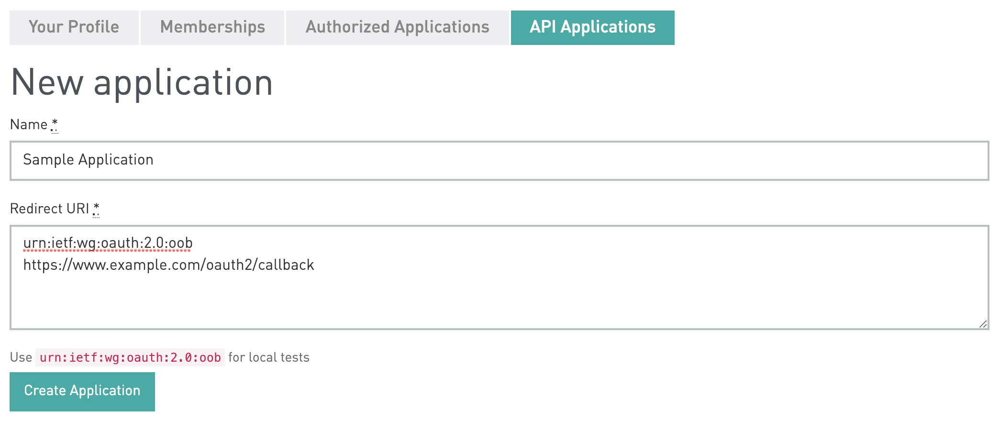
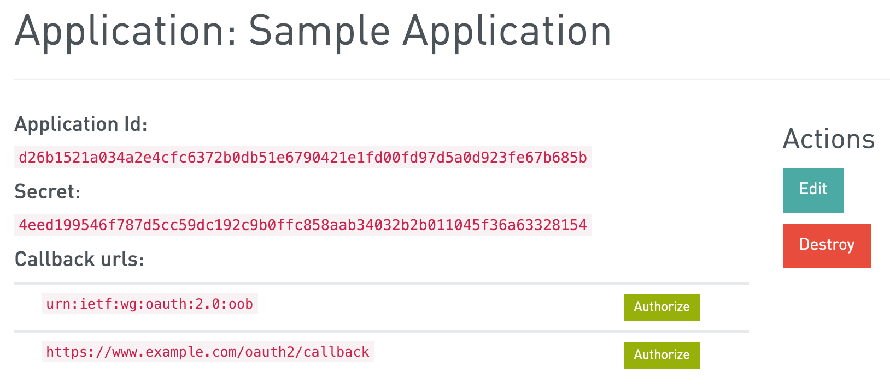
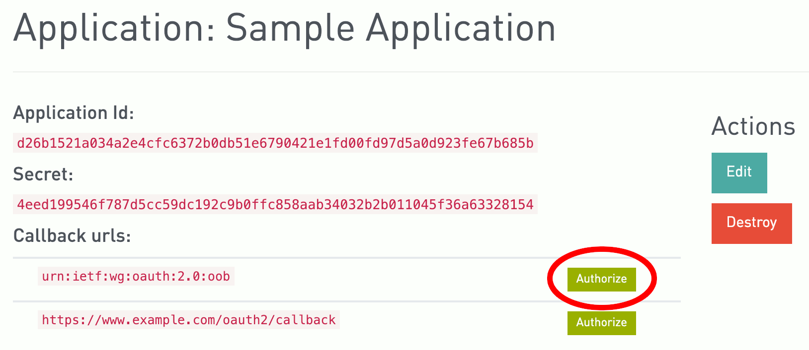
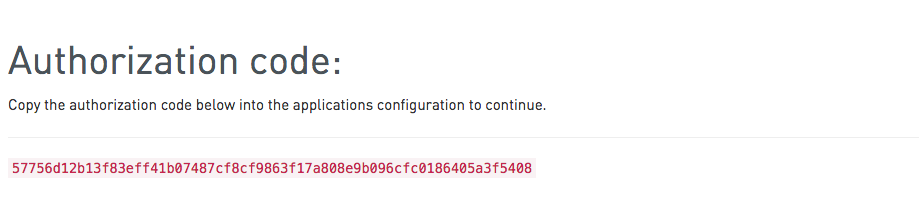

Introduction
The GRESB API is used for submitting asset data to GRESB and includes live validation. Applications can receive historical data when authorised by a given entity. Data is split between building data; characteristics which are constant over time - and annual data; updated annualy. Annual data is used to submit the Performance Component of a Real Estate Assessment response. See the Real Estate Reference Guide for more information.
For testing the API, we suggest using one of the following tools:
We also have an OpenAPI compatible specification file, which you can import into Postman, for example, to get you started with the available URLs. You can find the API specification in JSON format here.
Basic Operations
For all API actions below the same basic principles apply:
All API actions are over HTTPS. The API is designed in the spirit of REST. JSON is the primary encoding used for content. OAUTH2 is used to authenticate your application to the API and authorize access to our user's accounts.
Endpoints
The API is now versioned, in order to support backwards-incompatible changes. The current version is v1. This means the base URLs are:
- Testing Sandbox: https://api-sandbox.gresb.com/api/v1
- Production: https://api.gresb.com/api/v1
The following paths/endpoints are available:
| Path | HTTP verbs/methods |
|---|---|
| /certifications | GET |
| /user | GET |
| /entities | GET |
| /entities/{entity_id} | GET |
| /entities/{entity_id}/assets | GET, POST |
| /entities/{entity_id}/assets/{gresb_asset_id} | GET, PATCH, DELETE |
| /entities/{entity_id}/assets/batches | POST |
Common HTTP Verbs
There are four HTTP verbs we use in the API:
GET- Get a resource or a list of resources. If successfull a200 OKstatus code will be returned along with the results. AGETrequest is safe and never modifies data on the server and can always be retried if a network error occurs.PATCH- Update an existing resource with new values. The request can contain a partial representation of the resource, meaning only the provided fields/attributes will be updated.POST- Create a new resource or trigger a process with side-effects such as importing asset level data. If a new resource is created a201 Createdstatus code will be returned along with the new resource. If a more complex action is successfully trigged a200 OKstatus will be returned along with action specific details. If an error occurs doing aPOSTrequest the action may or may not have been completed and so retrying it may trigger additional side effects or attempt to create additional resources.DELETE- Delete an existing resource. If successful200 OKstatus code will be returned along with the last snapshot of the resource.DELETErequests are idempotent and can safely be retried for the same effect.
In all cases an error on the part of the client or server could also occur. The
very common status of 422 Unprocessable Entity indicates some sort of
validation error and 404 Not Found typically indicates an invalid resource
URI (e.g. the resource may have been deleted). Other likely codes are below but
any HTTP 1.1 code could occur.
Common HTTP Status Codes
Standard HTTP status codes indicate success or failure of an API request.
- Codes in the 200s indicate success
- Codes in the 400s indicate error in your request
- Codes in the 500s indicate an error with GRESB's servers
| Code | Text | Description |
|---|---|---|
| 200 | OK | Command was a success. The response body may include the result. |
| 201 | Created | Command was a success and a new resource has been created. The response body may include the result. |
| 204 | No Content | Command was a success. There is no futher content available. |
| 301 | Moved Permanently | The request included an older API version that is no longer supported. |
| 400 | Bad Request | The request was invalid. Often there is a missing parameter. An accompanying error message with further information may be provided. |
| 401 | Unauthorized | Authentication credentials were missing or invalid. See authorization for more assistance. |
| 403 | Forbidden | The request was refused because your account did not receive permission to complete this action. |
| 404 | Not Found | The requested item does not exist. |
| 422 | Unprocessable Entity | The request to create or update a resource resulted in validation errors. Error details are returned in the response body. |
| 429 | Too Many Requests | The request was refused due excessive use. The batch endpoint is rate-limited to prevent abuse. Usage is tracked per Oauth2 token. |
| 5xx | Serverside Error | An error has occurred on our servers. Please wait a few minutes and try again or notify us if the errors persists. |
Request and Response Encoding
Request parameters should be provided using the application/json
Content-Type. The only exception is the IDs of entities or assets which are
part of the URLs.
Unless otherwise documented all responses are JSON-encoded. Content-Type:
application/json.
Date formats
All date values send to the API must be ISO 8601 formatted (YYYY-MM-DD). Requests with incorrect format on any date fields will be rejected and an error is shown. This rule won't apply if empty values ("" or null) for date fields are given.
API Authorization
The GRESB API uses OAuth 2.0 protocol to securely authorize accounts. Each request made to the GRESB API requires an access token unique to your application. The process for obtaining an access token is outlined below.
Registering your Application
1. Obtain OAuth 2.0 Credentials
Before receiving an access token, you must register your application and obtain
OAuth credentials. This will include a unique client_id and client_secret.
First, ensure that you are logged into your GRESB account, then add your
application to https://api.gresb.com/oauth/applications. You will need to
include a name and one or more redirect URIs.
New Application

Once you submit, you will be directed to a page with your unique client ID and secret. You may also return to https://api.gresb.com/oauth/applications to see your registered applications.
Sample Application**

You may register as many applications as you like.
Requesting API Access
To use the GRESB API, you must receive authorization from your users to access their accounts. There are many ways to do this. This step is typically handled using a client library (see Client Libraries at http://oauth.net/2/ for examples in many languages). We support the following standard flows:
- Authorization Code Grant Flow - Often used for Web Applications (server-side)
OAuth Scopes
OAuth allows you to request different levels of access to a user's account. By
default all applications are granted access to the public scope. For the
GRESB API that doesn't allow access to any user data. To use the API in a
meaningful way, you need to request one or more of the following scopes:
| Scope | Access | Endpoints |
|---|---|---|
| user | Read access to user info | GET /user |
| entities | Read access to entities | GET /entities and GET /entities/{id} |
| read:assets | Read access to assets | GET /entities/{id}/assets and GET /entities/{id}/assets/{id} |
| write:assets | Write access to assets | POST /entities/{id}/assets, PATCH/DELETE /entities/{id}/assets/{id}, POST /entities/{id}/assets/batches |
If your user is not already signed in to their GRESB account they will be prompted to sign in or create a new account. Once signed in, the user will then be shown an authorization request with the option to 'Authorize' or 'Deny' your application access.
Example: Web Applications
As an example we will describe in detail the Authorization Code Grant Flow for a web application. This is the most secure method to authorize your application. It is also the most complex and is made simpler by using an OAuth client library.
Step 1 - Request Authorization
The first time you grant a user access to the GRESB API via your application, link the user to https://api.gresb.com/oauth/authorize, passing the following parameters:
- your application's
client_id - one of your application's registered
redirect_uris response_type=code- the access
scopeyou need
The full URL should look like this:
If you are testing this on the API sandbox, you can use the "Authorize" button, to simulate this step:

Authorization Code Screen:
The user will be requested to authorize or deny access to your application:

If the user denies your request you will receive a request at the
redirect_uri with error and error_description parameters:
https://www.example.com/oauth2/callback?error=access_denied&error_description=User+denied
If the user authorizes your request you will receive a request at the
redirect_uri with the authorization code in the code parameter. You will
use this to request an access_token. The authorization code will expire in
10 minutes. Once expired a fresh code must be requested. For example if your
redirect_uri was http://example.com/oauth2/callback you should expect a
callback to:
https://www.example.com/oauth2/callback?code=AUTHORIZATION_CODE
Note: It is also possible to use the urn:ietf:wg:oauth:2.0:oob as a redirect_uri. Doing this will display the code to the user in a webpage and ask them to copy and paste it into your application's configuration. This might be useful during testing or if your application does not have a web server component.

It is important to remember that users may revoke your application's access at any time. The easiest course of action if this happens is to request access again starting at Step 1.
Step 2 - Exchange Authorization Code for Access Token
curl \
-F "client_id=$CLIENT_ID" \
-F "client_secret=$CLIENT_SECRET" \
-F "code=$AUTHORIZATION_CODE" \
-F "grant_type=authorization_code" \
-F "redirect_uri=urn:ietf:wg:oauth:2.0:oob" \
-X POST https://api.gresb.com/oauth/token
Response
{
"access_token":"0123456789abcdef...",
"token_type":"bearer",
"expires_in":null,
"scope":"write:assets"
}
curl \
-F "access_token=$ACCESS_TOKEN" \
-X POST https://api.gresb.com/oauth/token/info?
Response
{
"resource_owner_id":5654,
"scope":["public","write:assets"],
"expires_in":null,
"application": {
"uid":"d26b1521a034a2e4cfc6372b0db51e6790421e1fd00fd97d5a0d923fe67b685b"
},
"created_at":1548944742
}
You can now request an access token by issuing a POST request to
/oauth/token. You must include grant_type=authorization_code, your
client_id, client_secret, and the authorization code as parameters to
your request. In return you will receive an access_token for you
application.
POST /oauth/token?client_id=$CLIENT_ID&client_secret=$CLIENT_SECRET&code=$AUTHORIZATION_CODE&redirect_uri=urn:ietf:wg:oauth:2.0:oob
Step 3. Use Access Token
The access token can now be used to make requests to the GRESB API. The token must be included either as a Authorization: Bearer HTTP header, or as a request parameter named access_token.
As an HTTP Header:
curl https://api.gresb.com/api/responses -H 'Authorization: Bearer $ACCESS_TOKEN'
As a request parameter:
curl https://api.gresb.com/api/responses?access_token=$ACCESS_TOKEN
OAuth Errors
Common
- invalid_request: 'The request is missing a required parameter, includes an unsupported parameter - value, or is otherwise malformed.'
- invalid_redirect_uri: 'The redirect uri included is not valid.'
- unauthorized_client: 'The client is not authorized to perform this request using this method.'
- access_denied: 'The resource owner or authorization server denied the request.'
- invalid_scope: 'The requested scope is invalid, unknown, or malformed.'
- server_error: 'The authorization server encountered an unexpected condition which prevented it from fulfilling the request.'
- temporarily_unavailable: 'The authorization server is currently unable to handle the request due to a temporary overloading or maintenance of the server.'
Access Grant Errors
- unsupported_response_type: 'The authorization server does not support this response type.'
Access Token Errors
- invalid_client: 'Client authentication failed due to unknown client, no client authentication included, or unsupported authentication method.'
- invalid_grant: 'The provided authorization grant is invalid, expired, revoked, does not match the redirection URI used in the authorization request, or was issued to another client.'
- unsupported_grant_type: 'The authorization grant type is not supported by the authorization server.'
Password Access Token Errors
- invalid_resource_owner: 'The provided resource owner credentials are not valid, or resource owner cannot be found'
Invalid Tokens
- revoked: "The access token was revoked"
- expired: "The access token expired"
- unknown: "The access token is invalid"
Users
GET /user
curl https://api.gresb.com/api/v1/user \
-H "Authorization: Bearer $ACCESS_TOKEN"
Response
{
"id": 12345,
"email": "api_user_1@gresb.com",
"first_name": "API",
"last_name": "User 1",
"job_title": "API tester",
"organization": "GRESB",
"telephone": "+31207740220",
"address": "Barbara Strozzilaan 101",
"city": "Amsterdam",
"state": "NH",
"zip": "1083 HN",
"country": "NL",
"status": "active",
"full_address": "Barbara Strozzilaan 101, Amsterdam, NH, 1083 HN, NL",
"full_name": "API User 1",
"created_at": "2017-03-22T11:32:19.221Z",
"updated_at": "2021-02-23T14:57:39.618Z"
}
Returns details on the current authenticated user. This request
requires the user scope.
Reporting Entities
To submit data for another entity, you need to be invited as a contributor, by an account manager. For testing purposes, you can create a reporting entity, using the GRESB sandbox portal.
GET /entities
curl https://api.gresb.com/api/v1/entities \
-H "Authorization: Bearer $ACCESS_TOKEN"
Response
[
{
"id": 1517,
"name": "Blue Buildings",
"manager": "Blue Bridge LLC",
"hq_country_code": "BR",
"hq_country_name": "Brazil",
"reporting_preferences": {
"currency": "USD",
"area_units_name": "Square Feet",
"reprting_period": "fiscal",
"reporting_period_month": 1,
"reporting_period_month_name": "January"
},
"current_user_access": {
"role": "account manager",
"can_manage_assets": true
},
"created_at": "2017-10-26T13:20:48.127Z",
"updated_at": "2021-02-01T15:01:27.557Z"
},
{
"id": 5028,
"name": "Rainbow Offices",
"manager": "Rainbow Offices plc",
"hq_country_code": "DE",
"hq_country_name": "Germany",
"reporting_preferences": {
"currency": "EUR",
"area_units_name": "Square Meters",
"reprting_period": "fiscal",
"reporting_period_month": 5,
"reporting_period_month_name": "May"
},
"current_user_access": {
"role": "internal contributor",
"can_manage_assets": false
},
"created_at": "2017-11-13T16:26:16.719Z",
"updated_at": "2021-01-05T12:30:48.765Z"
}
]
Returns all the entities (companies or funds) for which the user has
contributor access. The required scope is
entities.
GET /entities/{entity_id}
curl https://api.gresb.com/api/v1/entities/5028 \
-H "Authorization: Bearer $ACCESS_TOKEN"
Response
{
"id": 5028,
"name": "Rainbow Offices",
"manager": "Rainbow Offices plc",
"hq_country_code": "DE",
"hq_country_name": "Germany",
"reporting_preferences": {
"currency": "EUR",
"area_units_name": "Square Meters",
"reprting_period": "fiscal",
"reporting_period_month": 5,
"reporting_period_month_name": "May"
},
"current_user_access": {
"role": "account manager",
"can_manage_assets": true
},
"created_at": "2017-11-13T16:26:16.719Z",
"updated_at": "2021-02-05T12:30:48.765Z"
}
Similar to the above, but returns the details on a specific entity (company or
fund), identified by the ID in the URL. Requires that the user has contributor
access to the entity. The required scope is
entities.
Asset Data
Asset data can be posted via the assets endpoint. The data consists
of building characteristics and annual data. Building characteristics are
constant over time, whereas annual data changes annually. Some data is only
valid for the most current of the two reporting years, other data is valid for
both years.
Building characteristics:
- gresb asset identifier
- location specifics (e.g. city, address, latitude)
- construction year
- building certifications
Annual data:
- yearly asset characteristics (i.e. property type, asset name)
- efficiency measures
- reporting characteristics
- energy consumption
- ghg emissions
- water consumption
- waste disposal
You may submit data for any number of buildings for your user, in one or more of the aforementioned sections. The respondent may also provide data on other assets or for the same assets but in different sections. The data you access through the API is not specific to your application and include data on the respondent's other assets or sections. In other words, you can access assets from a common pool - as long as the assets are part of the same entity. It is the responsibility of the respondent to make sure that data submitted from multiple API partners does not conflict with each other. This API is designed to meet the needs of applications that upload data to GRESB in real-time or as a batch.
GET /entities/{entity_id}/assets
curl https://api.gresb.com/api/v1/entities/5028/assets \
-H "Authorization: Bearer $ACCESS_TOKEN"
Response
[
{
"gresb_asset_id": 442,
"country": "NL",
"state_province": "Noord-Holland",
"city": "Amsterdam",
"address": null,
"lat": null,
"lng": null,
"construction_year": 2000,
"asset_ownership": 100,
"partners_id": "GRB_OFF_357891Z",
"certifications": [
{
"id": 5913,
"certification_id": 901,
"name": "Sunshine Energy A",
"level": "Premium",
"size": "415.7"
}
],
"annual_data": [
{
"year": 2020,
"asset_name": "GRESB HQ",
"asset_size": 500,
"property_type_code": "OCHI"
},
{
"year": 2019,
"asset_name": "GRESB HQ",
"asset_size": 450,
"property_type_code": "OCHI"
},
{
"year": 2018,
"asset_name": "GRESB Headquarter",
"asset_size": 425,
"property_type_code": "OCHI"
}
],
"_outliers": [],
"created_at": "2019-01-15T11:07:13.436Z",
"updated_at": "2020-01-24T12:05:11.456Z"
}
]
Returns the assets of the entity specified in the URL, along with any annual data (if available). The required
scope is read:assets.
GET /entities/{entity_id}/assets/{asset_id}
curl https://api.gresb.com/api/v1/entities/5028/assets/442 \
-H "Authorization: Bearer $ACCESS_TOKEN"
Response
{
"gresb_asset_id": 442,
"country": "NL",
"state_province": "Noord-Holland",
"city": "Amsterdam",
"address": null,
"lat": null,
"lng": null,
"construction_year": 2000,
"asset_ownership": 100,
"partners_id": "GRB_OFF_357891Z",
"certifications": [
{
"id": 5913,
"certification_id": 901,
"name": "Sunshine Energy A",
"level": "Premium",
"size": "415.7"
}
],
"annual_data": [
{
"year": 2020,
"asset_name": "GRESB HQ",
"asset_size": 500,
"property_type_code": "OCHI"
},
{
"year": 2019,
"asset_name": "GRESB HQ",
"asset_size": 450,
"property_type_code": "OCHI"
},
{
"year": 2018,
"asset_name": "GRESB Headquarter",
"asset_size": 425,
"property_type_code": "OCHI"
}
],
"_outliers": [],
"created_at": "2019-01-15T11:07:13.436Z",
"updated_at": "2020-01-24T12:05:11.456Z"
}
Returns the asset specified in the URL, along with its annual data (if available). The required
scope is read:assets.
POST /entities/{entity_id}/assets
curl -X POST https://api.gresb.com/api/v1/entities/5028/assets \
-H "Authorization: Bearer $ACCESS_TOKEN" \
-H "Content-Type: application/json" \
-d @- <<JSON
{
"country": "US",
"state_province": "DC",
"city": "Washington, DC",
"address": "1600 Pennsylvania Avenue NW",
"construction_year": 1800,
"partners_id": "USGOV_DC456123G",
"certifications": [
{
"certification_id": 901,
"name": "Sunshine Energy A",
"level": "Premium",
"size": "230"
},
{
"certification_id": 873,
"name": "Sunshine Energy A",
"level": "Elementary",
"size": "270"
}
],
"annual_data": [
{
"year": 2020,
"asset_name": "The White House",
"whole_building": true,
"asset_size": 500,
"property_type_code": "OCHI",
"en_tot_lc_te": 147.12,
"wat_abs_lc_t": 97.1748
},
{
"year": 2019,
"asset_name": "The White House",
"asset_size": 500,
"property_type_code": "OCHI",
"asset_size": 500,
"en_tot_lc_te": 112.4,
"wat_abs_lc_t": 75.08
},
{
"year": 2018,
"asset_name": "The White House",
"asset_size": 500,
"property_type_code": "OCHI",
"en_tot_lc_te": 98.3,
"wat_abs_lc_t": 72.44
},
{
"year": 2016,
"asset_name": "The White House",
"asset_size": 500,
"property_type_code": "OCHI",
"en_tot_lc_te": 91.7,
"wat_abs_lc_t": 69.11
}
]
}
JSON
Response
{
"gresb_asset_id": 445,
"country": "US",
"state_province": "DC",
"city": "Washington, DC",
"address": "1600 Pennsylvania Avenue NW",
"construction_year": 1800,
"partners_id": "USGOV_DC456123G",
"certifications": [
{
"id": 62,
"certification_id": 901,
"name": "Sunshine Energy A",
"level": "Premium",
"size": "270"
},
{
"id": 63,
"certification_id": 873,
"name": "Sunshine Energy A",
"level": "Elementary",
"size": "230"
}
],
"annual_data": [
{
"year": 2020,
"asset_name": "The White House",
"whole_building": true,
"asset_size": 500,
"property_type_code": "OCHI",
"en_tot_lc_te": 147.12,
"wat_abs_lc_t": 97.1748
},
{
"year": 2019,
"asset_name": "The White House",
"asset_size": 500,
"property_type_code": "OCHI",
"en_tot_lc_te": 112.4,
"wat_abs_lc_t": 75.08
},
{
"year": 2018,
"asset_name": "The White House",
"asset_size": 500,
"property_type_code": "OCHI",
"en_tot_lc_te": 98.3,
"wat_abs_lc_t": 72.44
},
{
"year": 2016,
"asset_name": "The White House",
"asset_size": 500,
"property_type_code": "OCHI",
"en_tot_lc_te": 91.7,
"wat_abs_lc_t": 69.11
}
],
"_validations": {
"errors": {}
},
"_outliers": []
}
Creates a new asset for the specified entity in the URL. Returns the created
asset, along with any validation errors and warnings. The required
scope is write:assets.
The year in annual_data is required along with asset_size,property_type_code and asset_name.
If no record for that year is available, a new one will be created. Old records will be updated but won't have any effect on past surveys and rankings.
You can update data for the past 4 years.
For certifications we require the certification_id and the size (the size of your asset that received the certification). If a certification is divided in multiple levels, we also require the level.
For a complete list of fields, and their meaning, see the Data Dictionary.
To bulk-create more than a few assets, please submit a Batch Operation.
PATCH /entities/{entity_id}/assets/{asset_id}
curl -X PATCH https://api.gresb.com/api/v1/entities/5028/assets/442 \
-H "Authorization: Bearer $ACCESS_TOKEN" \
-H "Content-Type: application/json" \
-d @- <<JSON
{
"lat": 52.3364617,
"lng": 4.8849911,
"annual_data": [
{
"year": 2019,
"asset_size": "null"
}
]
}
JSON
Response
{
"gresb_asset_id": 442,
"country": "NL",
"state_province": "Noord-Holland",
"city": "Amsterdam",
"address": null,
"lat": 52.3364617,
"lng": 4.8849911,
"construction_year": 2000,
"asset_ownership": 100,
"partners_id": "GRB_OFF_357891Z",
"annual_data": [
{
"year": 2020,
"asset_name": "GRESB HQ",
"asset_size": 500,
"property_type_code": "OCHI"
},
{
"year": 2019,
"asset_name": "GRESB HQ",
"asset_size": "null",
"property_type_code": "OCHI",
"_validations": {
"errors": {
"asset_size": [
"can't be blank"
]
}
}
},
{
"year": 2018,
"asset_name": "GRESB Headquarter",
"asset_size": 425,
"property_type_code": "OCHI",
"_validations": {
"errors": {}
}
}
],
"_validations": {
"errors": {}
},
"_outliers": []
}
Updates the asset specified in the URL. This endpoint allows partial updates,
meaning you only need to provide the changes you want to apply and they are
merged with the existing asset fields. To clear an existing value, you need to
explicitly set it to null. The changed asset is validated and is only saved
if there are no validation errors. In all cases, you get a response with all
the asset fields and any validation errors/warnings. The required
scope is write:assets.
In the example shown on the right, the update has failed due to the request
clearing a required field (asset_size).
For a complete list of fields, and their meaning, see the Data Dictionary.
To bulk-update more than a few assets, please submit a Batch Operation.
Certification records can be created by sending the certification_id, level, and size with the certifications array. The certification_id in constraint with the level is unique for each asset.
The response includes a unique id, which is the identifier for the particular association record created.
Data is not overwritten by sending another certification. If the certification data does not include an id, we always try to create a new association.
The id of this particular record is needed to update the child record. If you don't want to update or add more certifications,
you can simply not send the certifications key in the request.
To update an existing certification record, provide the id. For example, to update the size of a certification, send the following data:
certifications: [{ "id": 63, "size": 500.12 }]
To remove certifications you need to provide the id and the key '_destroy'.
certifications: [{ "id": 63, "_destroy": "1" }]
DELETE /entities/{entity_id}/assets/{asset_id}
curl -X DELETE https://api.gresb.com/api/v1/entities/5028/assets/442 \
-H "Authorization: Bearer $ACCESS_TOKEN"
Response
{
"gresb_asset_id": 442,
"country": "NL",
"state_province": "Noord-Holland",
"city": "Amsterdam",
"address": null,
"lat": null,
"lng": null,
"construction_year": 2000,
"asset_ownership": 100,
"partners_id": "GRB_OFF_357891Z",
"annual_data": [
{
"year": 2020,
"asset_name": "GRESB HQ",
"asset_size": 500,
"property_type_code": "OCHI"
},
{
"year": 2019,
"asset_name": "GRESB HQ",
"asset_size": 450,
"property_type_code": "OCHI"
},
{
"year": 2018,
"asset_name": "GRESB Headquarter",
"asset_size": 425,
"property_type_code": "OCHI"
}
],
"_outliers": [],
"created_at": "2019-01-15T11:07:13.436Z",
"updated_at": "2020-01-24T12:05:11.456Z"
}
Deletes the asset specified in the URL. Returns the deleted asset if the
operation is successful. The required scope
is write:assets.
POST /entities/{entity_id}/asset_spreadsheet_export
curl -X POST https://api.gresb.com/api/v0/entities/5028/asset_spreadsheet_export \
-H "Authorization: Bearer $ACCESS_TOKEN" \
-d "callback_url=https://your.callback.url"
Callback request
{
"url": "https://gresb-prd-private.s3.amazonaws.com/production/asset-excels/..."
}
Exports all the entity's assets to a XSLX spreadsheet and sends a POST request to the provided callback URL containing the file URL. It will be accessible for 15 minutes.
Batch Asset Operations
Request format
{
"create": [
// any number of asset representations
],
"always_create": [
// Same as above, but always creates all items even if they fail
// some validation rules. A few attributes (see below) are still
// required, and the batch will fail if they are not found/valid.
],
"update": [
// any number of partial asset representations
// each one must include "gresb_asset_id"
],
"always_update": [
// Same as above, but always updates all (found) items even if they
// fail some validation rules.
// Each one must include "gresb_asset_id".
],
"delete": [
// objects with "gresb_asset_id" only
]
}
The API offers an endpoint specifically for scenarios when you need to create
or update multiple assets with one request. The request format is similar, with
one major difference: all asset representations are enclosed in an array, and
assigned to fields which are named create, always_create, update,
always_update and delete depending on what you want to do with the array of
assets. All five fields are optional. In any case, you probably want to provide
at least one, otherwise no operation will be performed.
Response format
{
"created": [
// successfully created assets, with their "gresb_asset_id" added
],
"always_created": [
// created assets (even invalid), with their "gresb_asset_id" added
],
"updated": [
// successfully updated assets, only those whose "gresb_asset_id" exist
],
"always_updated": [
// updated assets (even invalid), only those whose "gresb_asset_id" exist
],
"deleted": [
// successfully deleted assets, only those whose "gresb_asset_id" exist
],
"invalid": [
// failed creates and updates due to validation errors
],
"not_found": [
// failed deletes or updates due to incorrect/missing "gresb_asset_id"
],
"counts": { // counts of the items in the arrays above
"created": 0,
"always_created": 0,
"updated": 0,
"always_updated": 0,
"deleted": 0,
"invalid": 0,
"not_found": 0
}
}
This endpoint returns a response in a similar format to the request. Instead of
create, always_create, update, always_update, delete, you get
created, always_created, updated, always_updated, deleted. Each one
will contain an array of asset representations which were successfully created,
created regardless of validations, successfully updated, updated regardless of
validations, or deleted, respectively.
In addition to the fields above, you will also get invalid, not_found and
counts. invalid will contain assets you attempted to create, or update, but
failed validation. These records will not be saved and you will get a
_validations field for each, with more details. You can use always_create
and always_update to bypass the validation procedure.
Please be aware that access to this endpoint is limited in order to prevent abuse or overuse caused by a buggy or malicious client. It happens in two ways:
- Not more than 10 requests are allowed per minute.
- Each of the fields in the request is limited to 5000 assets at once.
These values are experimental and therefore are subject to change. However, you are unlikely to reach them during normal operation.
The information about the throttling is also provided in the following headers:
X-RateLimit-Remainingwhich contains remaining amount of allowed requests, -1 if throttled.X-RateLimit-Limitcontains the maximum number of allowed requests during a time period.X-RateLimit-Resetexpected counter reset time in UTC epoch seconds.
POST /entities/{entity_id}/assets/batches
curl -X POST https://api.gresb.com/api/v1/entities/16066/assets/batches \
-H "Authorization: Bearer $ACCESS_TOKEN" \
-H "Content-Type: application/json" \
-d @- <<JSON
{
"create": [
{
"city": "Borsele",
"country": "NL",
"partners_id": "ABC/X/136941",
// ... trimmed for brevity ...
"annual_data": [
{
"year": 2020,
"property_type_code": "OTPI",
"asset_size": 16500,
// ... trimmed for brevity ...
},
{
"year": 2019,
// ... trimmed for brevity ...
}
]
},
{
"city": "Paris",
"country": "FR",
"partners_id": "FFZ/Q/006941",
// ... trimmed for brevity ...
"annual_data": [
{
"year": 2020,
// ... trimmed for brevity ...
},
{
"year": 2019,
// ... trimmed for brevity ...
}
]
}
],
"always_create": [
{
"city": "Franekeradeel",
"state_province": "Flevoland",
"country": "NL",
"annual_data": [
{
"year": 2020,
"asset_name": "Marcio Dolfing",
"property_type_code": "LL0"
}
]
}
],
"update": [
{
"gresb_asset_id": 369076,
"address": "1775 Lange Viestraat",
"annual_data": [
{
"year": 2020,
"asset_name": "Name changed in 2020"
}
]
}
],
"always_update": [
{
"gresb_asset_id": 369077,
"annual_data": [
{
"year": 2020,
"property_type_code": "OCHI"
}
]
}
],
"delete": [
{
"gresb_asset_id": 369074
},
{
"gresb_asset_id": 369075
}
]
}
JSON
Response
{
"created": [
{
"gresb_asset_id": 369078,
"city": "Borsele",
"country": "NL",
"partners_id": "ABC/X/136941",
// ... trimmed for brevity ...
"annual_data": [
{
"year": 2020,
"property_type_code": "OTPI",
// ... trimmed for brevity ...
"_validations": {
"errors": {}
}
},
{
"year": 2019,
// ... trimmed for brevity ...
"_validations": {
"errors": {}
}
}
],
"_validations": {
"errors": {}
},
"_outliers": []
}
],
"always_created": [
{
"gresb_asset_id": 369079,
"country": "NL",
"state_province": "Flevoland",
"city": "Franekeradeel",
// ... trimmed for brevity ...
"annual_data": [
{
"year": 2020,
"asset_name": "Marcio Dolfing",
"property_type_code": "LL0",
"_validations": {
"errors": {}
}
},
{
"year": 2019,
"_validations": {
"errors": {}
}
}
],
"_validations": {
"errors": {}
},
"_outliers": []
}
],
"updated": [
{
"gresb_asset_id": 369076,
"address": "1775 Lange Viestraat",
// ... trimmed for brevity ...
"annual_data": [
{
"year": 2020,
"asset_name": "Name changed in 2020",
// ... trimmed for brevity ...
}
],
"_validations": {
"errors": {}
},
"_outliers": []
}
],
"always_updated": [
{
"gresb_asset_id": 369077,
// ... trimmed for brevity ...
"annual_data": [
{
"year": 2020,
// ... trimmed for brevity ...
"property_type_code": "OCHI",
"_validations": {
"errors": {}
}
},
{
"year": 2019,
"_validations": {
"errors": {}
}
}
],
"_validations": {
"errors": {}
},
"_outliers": []
}
],
"deleted": [
{
"gresb_asset_id": 369074,
// ... trimmed for brevity ...
}
],
"invalid": [
{
"gresb_asset_id": null,
"city": "Paris",
"country": "FR",
"partners_id": "FFZ/Q/006941",
// ... trimmed for brevity ...
"_validations": {
"errors": {
"state_province": "can't be blank"
}
},
"_outliers": []
}
],
"not_found": [369075],
"counts": {
"created": 1,
"always_created": 1,
"updated": 1,
"always_updated": 1,
"deleted": 1,
"invalid": 1,
"not_found": 1
}
}
In this example, we are going to create three new assets where one is always created, update two existing assets where one is always updated, and delete two assets. Many required fields are missing for brevity, but assume that one of the assets we want to create is missing some required data and the other two are fine. Assume both updates are valid and that one of the assets we want to delete does not exist. The example response shows what you would expect to get back.
Outliers
curl https://api.gresb.com/api/v1/entities/5028/assets \
-H "Authorization: Bearer $ACCESS_TOKEN"
Response
[
{
"gresb_asset_id": 442,
"country": "NL",
"state_province": "Noord-Holland",
"city": "Amsterdam",
// ... trimmed for brevity ...
"certifications": [],
"annual_data": [
{
"year": 2020,
// ... trimmed for brevity ...
},
{
"year": 2019,
// ... trimmed for brevity ...
},
],
"_outliers": [
{
"kpi": "en",
"type": "intensity",
"accepted": true,
"value": "2.5627716"
},
{
"kpi": "en",
"type": "lfl",
"accepted": true,
"value": "-28.20623403"
},
{
"kpi": "ghg",
"type": "lfl",
"accepted": false,
"value": "-95.59816432"
}
],
"created_at": "2018-01-15T11:07:13.436Z",
"updated_at": "2021-01-24T12:05:11.456Z"
}
]
GRESB provides a realtime outlier check to ensure data quality and automatically flags values that seem to be out of the norm.
Outlier checks are performed after creating or updating a Portfolio asset, if no validation errors occurred.
If outliers have been detected, the outliers: [] field in the response will list them accordingly.
Outlier types:
- LFL: Like for like detection, compares values against last year
- Intensity: Detects abnormal values for the current reporting year
KPI:
- en: Energy inkWh/m2
- ghg: Green house gases measured in tonnes/m2
- was: Waste in tonnes/m2
- wat: Water in m3/m2
Accepted:
- The
acceptedfield gives you information whether or not this value will be included or excluded in scoring. - true: The data points associated to this outlier will be included in your score, but not in the benchmark groups.
- false: The data points associated to this outlier will not be included in your score.
Validation Endpoint
Request format
{
"create": [
// any number of asset representations
],
"update": [
// any number of partial asset representations
// each one must include "gresb_asset_id"
]
}
The API offers an endpoint specifically to only validate (multiple) assets.
The request format is similar, all asset representations have to be enclosed in an
array and are assigned to the fields create or update.
The update array requires assets with an gresb_asset_id.
Response format
{
"valid": [
// all records that passed validation
],
"invalid": [
// all invalid records
],
"not_found": [
// failed to find via "gresb_asset_id"
],
"counts": { // counts of the items in the arrays above
"valid": 0,
"invalid": 0,
"not_found": 0
}
}
POST /entities/{entity_id}/assets/validation
curl -X POST https://api.gresb.com/api/v1/entities/16066/assets/validation \
-H "Authorization: Bearer $ACCESS_TOKEN" \
-H "Content-Type: application/json" \
-d @- <<JSON
{
"create": [
{
"city": "Borsele",
"country": "NL",
"annual_data": [
{
"year": 2020,
"property_type_code": "OTPI",
// ... trimmed for brevity ...
},
{
"year": 2019,
// ... trimmed for brevity ...
}
]
}
],
"update": [
{
"gresb_asset_id": 369076,
"address": "1775 Lange Viestraat",
"annual_data": [
{
"year": 2020,
"asset_name": ""
}
]
}
],
}
JSON
Response
{
"valid": [
{
"city": "Borsele",
"country": "NL",
"annual_data": [
{
"year": 2020,
"property_type_code": "OTPI",
// ... trimmed for brevity ...
},
{
"year": 2019,
// ... trimmed for brevity ...
}
],
"_validations": {
"errors": {}
}
}
],
"invalid": [
{
"gresb_asset_id": 369076,
// ... trimmed for brevity ...
"annual_data": [
{
"year": 2020,
"property_type_code": "OTPI",
// ... trimmed for brevity ...
"_validations": {
"errors": {
"asset_name": {
"can't be blank"
}
}
}
}
]
}
]
"counts": {
"valid": 1,
"invalid": 1,
"not_found": 0
}
}
In this example, we are going to validate a new asset and an already existing one. Many required fields are missing for brevity, but assume that one of the assets we want to create is valid and the existing one is missing some required data (asset_name). The example response shows what you would expect to get back. In this case one asset is valid and the other one is invalid.
Data Dictionary
Data may be posted to describe each asset/building and provide an annual snapshot for up to 5 years prior to the Assessment. For example, data may be posted from reporting years 2016 to 2020 for the 2021 Real Estate Assessment. The data types and object keys for each field/metric are listed below. Please refer to the 2021 Real Estate Reference Guide for more detailed definitions and reporting guidance.
Asset characteristics are posted per asset, not per reporting year.
| variable | type | description |
|---|---|---|
| gresb_asset_id | integer | Unique GRESB Asset ID. Generated automatically when creating a new asset. Non-existing IDs or IDs belonging to another portfolio will be rejected. |
| partners_id | integer | Self-provided Asset ID to ensure correct mapping within your application. |
| country | character varying (255) | ISO3166 country code. See Country List for further information. |
| state_province | character varying (255) | State, province, or region. |
| city | character varying (255) | City, town, or village. |
| address | character varying (255) | Physical street or postal address. |
| lat | numeric | Latitude. |
| lng | numeric | Longitude. |
| construction_year | integer | Year in which the asset was completed and ready for use. |
| asset_ownership | numeric | Percentage of the asset owned by the reporting entity. |
Certifications are posted per asset, not annually.
| variable | type | description | unit |
|---|---|---|---|
| id | integer | Unique identifier associated to a certification record. Created automatically when creating a new certification record. | |
| certification_id | integer | The ID of the certification. | |
| size | numeric | Floor area covered by the certification. | m2/sq. ft |
| level | character varying (255) | The certification level achieved. Only available for some certifications, and mandatory when available. |
The following list of fields are posted annually, per reporting year.
| variable | type | description | unit |
|---|---|---|---|
| year | integer | Year that data is being reported for. | |
| asset_name | character varying (255) | Name of the asset as displayed to the users with access to this portfolio in the Asset Portal. | |
| property_type_code | character varying (255) | GRESB property type classification for the asset. See Property Type List for further information. |
|
| asset_gav | numeric | Gross asset value of the asset at the end of the reporting year. | currency (millions) |
| asset_size | numeric | The total floor area size of the asset - without outdoor/exterior areas. Use the same area metric as reported in RC3. | m2/sq. ft |
| energy_rating_id | integer | The ID of the energy rating. See Energy Ratings for further information. |
|
| energy_rating_size | numeric | Floor area covered by the energy rating. | m2/sq. ft |
| en_emr_tba | boolean | Has a technical building assessment to identify energy efficiency improvements been performed in the last 3 years? | |
| en_emr_amr | boolean | Energy efficiency measure: Have automatic meter readings for energy been implemented in the last 3 years? | |
| en_emr_asur | boolean | Energy efficiency measure: Have automation system upgrades/replacements been implemented in the last 3 years? | |
| en_emr_msur | boolean | Energy efficiency measure: Have management system upgrades/replacements been implememted in the last 3 years? | |
| en_emr_ihee | boolean | Energy efficiency measure: Have high-efficiency equipment and/or appliances been installed in the last 3 years? | |
| en_emr_iren | boolean | Energy efficiency measure: Has on-site renewable energy been installed in the last 3 years? | |
| en_emr_oce | boolean | Energy efficiency measure: Have occupier engagement/informational technology improvements been implemented in the last 3 years? | |
| en_emr_sbt | boolean | Energy efficiency measure: Have smart grid or smart building technologies been implemented in the last 3 years? | |
| en_emr_src | boolean | Energy efficiency measure: Has systems commissioning or retro-commissioning been implememted in the last 3 years? | |
| en_emr_wri | boolean | Energy efficiency measure: Has the wall and/or roof insulation been replaced or modified to improve energy efficiency in the last 3 years? | |
| en_emr_wdr | boolean | Energy efficiency measure: Have windows been replaced to improve energy efficiency in the last 3 years? | |
| wat_emr_tba | boolean | Has a technical building assessment to identify water efficiency improvements been performed in the last 3 years? | |
| wat_emr_amr | boolean | Water efficiency measure: Have automatic meter readings for water been implemented in the last 3 years? | |
| wat_emr_clt | boolean | Water efficiency measure: Have cooling towers been introduced in the last 3 years? | |
| wat_emr_dsi | boolean | Water efficiency measure: Have smart or drip irrigation methods been implemented in the last 3 years? | |
| wat_emr_dtnl | boolean | Water efficiency measure: Has drought-tolerant and/or native landscaping been introduced in the last 3 years? | |
| wat_emr_hedf | boolean | Water efficiency measure: Have high-efficiency and/or dry fixtures been introduced in the last 3 years? | |
| wat_emr_lds | boolean | Water efficiency measure: Has a leak detection system been implemented in the last 3 years? | |
| wat_emr_mws | boolean | Water efficiency measure: Has the installation of water sub-meters been implemented in the last 3 years? | |
| wat_emr_owwt | boolean | Water efficiency measure: Has a system or process of on-site water treatment been implemented in the last 3 years? | |
| wat_emr_rsgw | boolean | Water efficiency measure: Has a system or process to reuse storm and/or grey water been implemented in the last 3 years? | |
| was_emr_tba | boolean | Has a technical building assessment to identify waste efficiency improvements been performed in the last 3 years? | |
| was_emr_clfw | boolean | Waste efficiency measure: Has composting landscape and/or food waste been implemented in the last 3 years? | |
| was_emr_opm | boolean | Waste efficiency measure: Has a system or process of ongoing monitoring of waste performance been implemented in the last 3 years? | |
| was_emr_rec | boolean | Waste efficiency measure: Has a program for local waste recycling been implemented in the last 3 years? | |
| was_emr_wsm | boolean | Waste efficiency measure: Has a program of waste management been implemented in the last 3 years? | |
| was_emr_wsa | boolean | Waste efficiency measure: Has a waste stream audit been performed in the last 3 years? | |
| tenant_ctrl | boolean | Is the whole building tenant-controlled (TRUE) or does the landlord have at least some operational control (FALSE)? | |
| asset_vacancy | numeric | The average percent vacancy rate. | % |
| owned_entire_period | boolean | Has the asset been owned for the entire reporting year (TRUE) or was the asset purchased or sold during the reporting year (FALSE)? | |
| ownership_from | date | If asset was not owned for entire reporting period, date when the asset was purchased or acquired within the reporting year. | |
| ownership_to | date | If asset was not owned for entire reporting period, date when the asset was sold within the reporting year. | |
| ncmr_status | character varying (255) | The operational status of the asset: Standing Investment, Major Renovation Project, or New Construction Project, within the reporting year. |
|
| ncmr_from | date | If the asset was under major renovation or new construction, the start date of the project within the reporting year. | |
| ncmr_to | date | If the asset was under major renovation or new construction, the end date of the project within the reporting year. | |
| whole_building | boolean | Is the energy consumption data of the asset collected for the whole building (TRUE) or separately for base building and tenant space (FALSE)? | |
| asset_size_common | numeric | Floor area of the common areas. | m2/sq. ft |
| asset_size_shared | numeric | Floor area of the shared spaces. | m2/sq. ft |
| asset_size_tenant | numeric | Floor area of all tenant spaces (all lettable area). | m2/sq. ft |
| asset_size_tenant_landlord | numeric | Floor area of tenant spaces where the landlord purchases energy. | m2/sq. ft |
| asset_size_tenant_tenant | numeric | Floor area of tenant spaces where the tenant purchases energy. | m2/sq. ft |
| en_data_from | date | Date within reporting year from which energy data is available. | |
| en_data_to | date | Date within reporting year to which energy data is available. | |
| en_abs_wf | numeric | Absolute and non-normalized fuel consumption for assets reporting on whole building. | kWh |
| en_cov_wf | numeric | Covered floor area where fuel consumption data is collected for assets reporting on whole building. | m2/sq. ft |
| en_tot_wf | numeric | Total floor area where fuel supply exists for assets reporting on whole building. | m2/sq. ft |
| en_abs_wd | numeric | Absolute and non-normalized district heating and cooling consumption for assets reporting on whole building. | kWh |
| en_cov_wd | numeric | Covered floor area where district heating and cooling consumption data is collected for assets reporting on whole building. | m2/sq. ft |
| en_tot_wd | numeric | Total floor area where district heating and cooling supply exists for assets reporting on whole building. | m2/sq. ft |
| en_abs_we | numeric | Absolute and non-normalized electricity consumption for assets reporting on whole building. | kWh |
| en_cov_we | numeric | Covered floor area where electricity consumption data is collected for assets reporting on whole building. | m2/sq. ft |
| en_tot_we | numeric | Total floor area where electricity supply exists for assets reporting on whole building. | m2/sq. ft |
| en_abs_lc_bsf | numeric | Absolute and non-normalized fuel consumption for shared services. | kWh |
| en_cov_lc_bsf | numeric | Covered floor area where fuel consumption data is collected for shared services. | m2/sq. ft |
| en_tot_lc_bsf | numeric | Total floor area where fuel supply exists for shared services. | m2/sq. ft |
| en_abs_lc_bsd | numeric | Absolute and non-normalized district heating and cooling consumption for shared services. | kWh |
| en_cov_lc_bsd | numeric | Covered floor area where district heating and cooling consumption data is collected for shared services. | m2/sq. ft |
| en_tot_lc_bsd | numeric | Total floor area where district heating and cooling supply exists for shared services. | m2/sq. ft |
| en_abs_lc_bse | numeric | Absolute and non-normalized electricity consumption for shared services. | kWh |
| en_cov_lc_bse | numeric | Covered floor area where electricity consumption data is collected for shared services. | m2/sq. ft |
| en_tot_lc_bse | numeric | Total floor area where electricity supply exists for shared services. | m2/sq. ft |
| en_abs_lc_bcf | numeric | Absolute and non-normalized fuel consumption for common areas. | kWh |
| en_cov_lc_bcf | numeric | Covered floor area where fuel consumption data is collected for common areas. | m2/sq. ft |
| en_tot_lc_bcf | numeric | Total floor area where fuel supply exists for common areas. | m2/sq. ft |
| en_abs_lc_bcd | numeric | Absolute and non-normalized district heating and cooling consumption for common areas. | kWh |
| en_cov_lc_bcd | numeric | Covered floor area where district heating and cooling consumption data is collected for common areas. | m2/sq. ft |
| en_tot_lc_bcd | numeric | Total floor area where district heating and cooling supply exists for common areas. | m2/sq. ft |
| en_abs_lc_bce | numeric | Absolute and non-normalized electricity consumption for common areas. | kWh |
| en_cov_lc_bce | numeric | Covered floor area where electricity consumption data is collected for common areas. | m2/sq. ft |
| en_tot_lc_bce | numeric | Total floor area where electricity supply exists for common areas. | m2/sq. ft |
| en_abs_lc_tf | numeric | Absolute and non-normalized fuel consumption for landlord-controlled tenant spaces. | kWh |
| en_cov_lc_tf | numeric | Covered floor area where fuel consumption data is collected for landlord-controlled tenant spaces. | m2/sq. ft |
| en_tot_lc_tf | numeric | Total floor area where fuel supply exists for landlord-controlled tenant spaces. | m2/sq. ft |
| en_abs_lc_td | numeric | Absolute and non-normalized district heating and cooling consumption for landlord-controlled tenant spaces. | kWh |
| en_cov_lc_td | numeric | Covered floor area where district heating and cooling consumption data is collected for landlord-controlled tenant spaces. | m2/sq. ft |
| en_tot_lc_td | numeric | Total floor area where district heating and cooling supply exists for landlord-controlled tenant spaces. | m2/sq. ft |
| en_abs_lc_te | numeric | Absolute and non-normalized electricity consumption for landlord-controlled tenant spaces. | kWh |
| en_cov_lc_te | numeric | Covered floor area where electricity consumption data is collected for landlord-controlled tenant spaces. | m2/sq. ft |
| en_tot_lc_te | numeric | Total floor area where electricity supply exists for landlord-controlled tenant spaces. | m2/sq. ft |
| en_abs_tc_tf | numeric | Absolute and non-normalized fuel consumption for tenant-controlled tenant spaces. | kWh |
| en_cov_tc_tf | numeric | Covered floor area where fuel consumption data is collected for tenant-controlled tenant spaces. | m2/sq. ft |
| en_tot_tc_tf | numeric | Total floor area where fuel supply exists for tenant-controlled tenant spaces. | m2/sq. ft |
| en_abs_tc_td | numeric | Absolute and non-normalized district heating and cooling consumption for tenant-controlled tenant spaces. | kWh |
| en_cov_tc_td | numeric | Covered floor area where district heating and cooling consumption data is collected for tenant-controlled tenant spaces. | m2/sq. ft |
| en_tot_tc_td | numeric | Total floor area where district heating and cooling supply exists for tenant-controlled tenant spaces. | m2/sq. ft |
| en_abs_tc_te | numeric | Absolute and non-normalized electricity consumption for tenant-controlled tenant spaces. | kWh |
| en_cov_tc_te | numeric | Covered floor area where electricity consumption data is collected for tenant-controlled tenant spaces. | m2/sq. ft |
| en_tot_tc_te | numeric | Total floor area where electricity supply exists for tenant-controlled tenant spaces. | m2/sq. ft |
| en_abs_lc_of | numeric | Absolute and non-normalized fuel consumption for landlord-controlled outdoor spaces. | kWh |
| en_abs_lc_oe | numeric | Absolute and non-normalized electricity consumption for landlord-controlled outdoor spaces. | kWh |
| en_abs_tc_of | numeric | Absolute and non-normalized fuel consumption for tenant-controlled outdoor spaces. | kWh |
| en_abs_tc_oe | numeric | Absolute and non-normalized electricity consumption for tenant-controlled outdoor spaces. | kWh |
| en_ren_ons_con | numeric | Renewable energy generated and consumed on-site by the landlord. | kWh |
| en_ren_ons_exp | numeric | Renewable energy generated on-site and exported by the landlord. | kWh |
| en_ren_ons_tpt | numeric | Renewable energy generated and consumed on-site by the tenant or a third party. | kWh |
| en_ren_ofs_pbl | numeric | Renewable energy generated off-site and purchased by the landlord. | kWh |
| en_ren_ofs_pbt | numeric | Renewable energy generated off-site and purchased by the tenant. | kWh |
| ghg_abs_s1_w | numeric | GHG scope 1 emissions generated by the asset. | metric ton |
| ghg_cov_s1_w | numeric | Covered floor area where GHG scope 1 emissions data is collected. | m2/sq. ft |
| ghg_tot_s1_w | numeric | Total floor area where GHG scope 1 emissions can exist. | m2/sq. ft |
| ghg_abs_s1_o | numeric | GHG scope 1 emissions generated by the outdoor spaces associated with the asset. | metric ton |
| ghg_abs_s2_lb_w | numeric | GHG scope 2 emissions generated by the asset, calculated using the location-based method. | metric ton |
| ghg_cov_s2_lb_w | numeric | Covered floor area where GHG scope 2 emissions data is collected, calculated using the location-based method. | m2/sq. ft |
| ghg_tot_s2_lb_w | numeric | Total floor area where GHG scope 2 emissions can exist, calculated using the location-based method. | m2/sq. ft |
| ghg_abs_s2_lb_o | numeric | GHG scope 2 emissions generated by the outdoor spaces associated with the asset, calculated using the location-based method. | metric ton |
| ghg_abs_s2_mb_w | numeric | GHG scope 2 emissions generated by the asset, calculated using the market-based method. | metric ton |
| ghg_abs_s2_mb_o | numeric | GHG scope 2 emissions generated by the outdoor spaces associated with the asset, calculated using the market-based method. | metric ton |
| ghg_abs_s3_w | numeric | GHG scope 3 emissions generated by the asset. | metric ton |
| ghg_cov_s3_w | numeric | Covered floor area where GHG scope 3 emissions data is collected. | m2/sq. ft |
| ghg_tot_s3_w | numeric | Total floor area where GHG scope 3 emissions can exist. | m2/sq. ft |
| ghg_abs_s3_o | numeric | GHG scope 3 emissions generated by the outdoor spaces associated with the asset. | metric ton |
| ghg_abs_offset | numeric | GHG offsets purchased. | metric ton |
| wat_data_from | date | Date within reporting year from which water data is available. | |
| wat_data_to | date | Date within reporting year to which water data is available. | |
| wat_abs_w | numeric | Absolute and non-normalized water consumption for assets reporting on whole building. | m3 |
| wat_cov_w | numeric | Covered floor area where water consumption data is collected for assets reporting on whole building. | m2/sq. ft |
| wat_tot_w | numeric | Total floor area where water supply exists for assets reporting on whole building. | m2/sq. ft |
| wat_abs_lc_bs | numeric | Absolute and non-normalized water consumption for shared services. | m3 |
| wat_cov_lc_bs | numeric | Covered floor area where water consumption data is collected for shared services. | m2/sq. ft |
| wat_tot_lc_bs | numeric | Total floor area where water supply exists for shared services. | m2/sq. ft |
| wat_abs_lc_bc | numeric | Absolute and non-normalized water consumption for common areas. | m3 |
| wat_cov_lc_bc | numeric | Covered floor area where water consumption data is collected for common areas. | m2/sq. ft |
| wat_tot_lc_bc | numeric | Total floor area where water supply exists for common areas. | m2/sq. ft |
| wat_abs_lc_t | numeric | Absolute and non-normalized water consumption for landlord-controlled tenant spaces. | m3 |
| wat_cov_lc_t | numeric | Covered floor area where water consumption data is collected for landlord-controlled tenant spaces. | m2/sq. ft |
| wat_tot_lc_t | numeric | Total floor area where water supply exists for landlord-controlled tenant spaces. | m2/sq. ft |
| wat_abs_tc_t | numeric | Absolute and non-normalized water consumption for tenant-controlled tenant spaces. | m3 |
| wat_cov_tc_t | numeric | Covered floor area where water consumption data is collected for tenant-controlled tenant spaces. | m2/sq. ft |
| wat_tot_tc_t | numeric | Total floor area where water supply exists for tenant-controlled tenant spaces. | m2/sq. ft |
| wat_abs_lc_o | numeric | Absolute and non-normalized water consumption for landlord-controlled outdoor spaces. | m3 |
| wat_abs_tc_o | numeric | Absolute and non-normalized water consumption for tenant-controlled outdoor spaces. | m3 |
| wat_rec_ons_reu | numeric | Volume of greywater and/or blackwater reused in on-site activities. | m3 |
| wat_rec_ons_cap | numeric | Volume of rainwater, fog, or condensate that is treated and purified for reuse and/or recycling. | m3 |
| wat_rec_ons_ext | numeric | Volume of extracted groundwater that is treated and purified for reuse and/or recycling. | m3 |
| wat_rec_ofs_pur | numeric | Volume of recycled water purchased from a third party. | m3 |
| was_data_from | date | Date within reporting year from which waste data is available. | |
| was_data_to | date | Date within reporting year to which waste data is available. | |
| was_abs_haz | numeric | Absolute and non-normalized hazardous waste produced by asset. | metric ton |
| was_abs_nhaz | numeric | Absolute and non-normalized non-hazardous waste produced by asset. | metric ton |
| was_pcov | numeric | Percent coverage out of total asset size where waste data is collected. | % |
| was_pabs_lf | numeric | Percentage of total waste sent to landfill. | % |
| was_pabs_in | numeric | Percentage of total waste incinerated. | % |
| was_pabs_ru | numeric | Percentage of total waste reused. | % |
| was_pabs_wte | numeric | Percentage of total waste converted to energy. | % |
| was_pabs_rec | numeric | Percentage of total waste recycled. | % |
| was_pabs_oth | numeric | Percentage of total waste where disposal route is other or unknown. | % |
Certifications
We provide a list of available building certifications that can be assigned to an asset.
Some certifications have various levels available. In those cases, the level field is mandatory for an asset.
GET /certifications
curl https://api.gresb.com/api/v1/certifications
Response
[
{
"id": 585,
"name": "ABINC Certification/Urban Development and Shopping Centre",
"country": "JP",
"status": "design"
},
{
"id": 895,
"name": "Austin Energy/Austin Energy Green Building - Design & Construction",
"levels": [
"5 Stars",
"4 Stars",
"3 Stars",
"2 Stars",
"1 Star"
],
"status": "operational"
}
]
Energy Ratings
We provide a list of available energy ratings that can be assigned to an asset.
GET /energy_ratings
curl https://api.gresb.com/api/v1/energy_ratings
Response
[
{
"id": 47,
"name": "Energy Star Certified - 75-79 Points"
},
{
"id": 3,
"name": "EU EPC - A"
}
]
API Version History
{
"new": [
"asset_ownership",
"en_data_from",
"en_data_to",
"en_emr_amr",
"en_emr_asur",
"en_emr_ihee",
"en_emr_iren",
"en_emr_msur",
"en_emr_oce",
"en_emr_sbt",
"en_emr_src",
"en_emr_tba",
"en_emr_wdr",
"en_emr_wri",
"en_ren_ofs_pbl",
"en_ren_ofs_pbt",
"en_ren_ons_con",
"en_ren_ons_exp",
"en_ren_ons_tpt",
"energy_rating_id",
"energy_rating_size",
"ghg_abs_s2_lb_o",
"ghg_abs_s2_lb_w",
"ghg_abs_s2_mb_o",
"ghg_abs_s2_mb_w",
"ncmr_from",
"ncmr_to",
"owned_entire_period",
"ownership_from",
"ownership_to",
"tenant_ctrl",
"was_data_from",
"was_data_to",
"was_emr_clfw",
"was_emr_opm",
"was_emr_rec",
"was_emr_tba",
"was_emr_wsa",
"was_emr_wsm",
"was_pabs_ru",
"wat_data_from",
"wat_data_to",
"wat_emr_amr",
"wat_emr_clt",
"wat_emr_dsi",
"wat_emr_dtnl",
"wat_emr_hedf",
"wat_emr_lds",
"wat_emr_mws",
"wat_emr_owwt",
"wat_emr_rsgw",
"wat_emr_tba",
"wat_rec_ofs_pur",
"wat_rec_ons_cap",
"wat_rec_ons_ext",
"wat_rec_ons_reu"
],
"removed": [
"asset_ind",
"asset_own",
"asset_size_whole",
"dc_change_energy",
"dc_change_water",
"dc_change",
"directly_managed",
"ghg_net_abs",
"ghg_s2_abs",
"ghg_s2_o_abs",
"major_renovation_completed",
"new_construction_completed",
"was_do_perc",
"was_r_perc",
"was_wd_perc"
],
"renamed": [
{"old": "en_ind_woe_abs", "new": "en_abs_tc_oe"},
{"old": "en_ind_wof_abs", "new": "en_abs_tc_of"},
{"old": "en_ind_wwd_abs", "new": "en_abs_wd", },
{"old": "en_ind_wwd_cov", "new": "en_cov_wd", },
{"old": "en_ind_wwd_tot", "new": "en_tot_wd", },
{"old": "en_ind_wwe_abs", "new": "en_abs_we", },
{"old": "en_ind_wwe_cov", "new": "en_cov_we", },
{"old": "en_ind_wwe_tot", "new": "en_tot_we", },
{"old": "en_ind_wwf_abs", "new": "en_abs_wf", },
{"old": "en_ind_wwf_cov", "new": "en_cov_wf", },
{"old": "en_ind_wwf_tot", "new": "en_tot_wf", },
{"old": "en_man_bcd_abs", "new": "en_abs_lc_bcd"},
{"old": "en_man_bcd_cov", "new": "en_cov_lc_bcd"},
{"old": "en_man_bcd_tot", "new": "en_tot_lc_bcd"},
{"old": "en_man_bce_abs", "new": "en_abs_lc_bce"},
{"old": "en_man_bce_cov", "new": "en_cov_lc_bce"},
{"old": "en_man_bce_tot", "new": "en_tot_lc_bce"},
{"old": "en_man_bcf_abs", "new": "en_abs_lc_bcf"},
{"old": "en_man_bcf_cov", "new": "en_cov_lc_bcf"},
{"old": "en_man_bcf_tot", "new": "en_tot_lc_bcf"},
{"old": "en_man_boe_abs", "new": "en_abs_lc_oe"},
{"old": "en_man_bof_abs", "new": "en_abs_lc_of"},
{"old": "en_man_bsd_abs", "new": "en_abs_lc_bsd"},
{"old": "en_man_bsd_cov", "new": "en_cov_lc_bsd"},
{"old": "en_man_bsd_tot", "new": "en_tot_lc_bsd"},
{"old": "en_man_bse_abs", "new": "en_abs_lc_bse"},
{"old": "en_man_bse_cov", "new": "en_cov_lc_bse"},
{"old": "en_man_bse_tot", "new": "en_tot_lc_bse"},
{"old": "en_man_bsf_abs", "new": "en_abs_lc_bsf"},
{"old": "en_man_bsf_cov", "new": "en_cov_lc_bsf"},
{"old": "en_man_bsf_tot", "new": "en_tot_lc_bsf"},
{"old": "en_man_tld_abs", "new": "en_abs_lc_td"},
{"old": "en_man_tld_cov", "new": "en_cov_lc_td"},
{"old": "en_man_tld_tot", "new": "en_tot_lc_td"},
{"old": "en_man_tle_abs", "new": "en_abs_lc_te"},
{"old": "en_man_tle_cov", "new": "en_cov_lc_te"},
{"old": "en_man_tle_tot", "new": "en_tot_lc_te"},
{"old": "en_man_tlf_abs", "new": "en_abs_lc_tf"},
{"old": "en_man_tlf_cov", "new": "en_cov_lc_tf"},
{"old": "en_man_tlf_tot", "new": "en_tot_lc_tf"},
{"old": "en_man_ttd_abs", "new": "en_abs_tc_td"},
{"old": "en_man_ttd_cov", "new": "en_cov_tc_td"},
{"old": "en_man_ttd_tot", "new": "en_tot_tc_td"},
{"old": "en_man_tte_abs", "new": "en_abs_tc_te"},
{"old": "en_man_tte_cov", "new": "en_cov_tc_te"},
{"old": "en_man_tte_tot", "new": "en_tot_tc_te"},
{"old": "en_man_ttf_abs", "new": "en_abs_tc_tf"},
{"old": "en_man_ttf_cov", "new": "en_cov_tc_tf"},
{"old": "en_man_ttf_tot", "new": "en_tot_tc_tf"},
{"old": "en_man_wcd_abs", "new": "en_abs_wd", },
{"old": "en_man_wcd_cov", "new": "en_cov_wd", },
{"old": "en_man_wcd_tot", "new": "en_tot_wd", },
{"old": "en_man_wce_abs", "new": "en_abs_we", },
{"old": "en_man_wce_cov", "new": "en_cov_we", },
{"old": "en_man_wce_tot", "new": "en_tot_we", },
{"old": "en_man_wcf_abs", "new": "en_abs_wf", },
{"old": "en_man_wcf_cov", "new": "en_cov_wf", },
{"old": "en_man_wcf_tot", "new": "en_tot_wf", },
{"old": "ghg_offset_abs", "new": "ghg_abs_offset"},
{"old": "ghg_s1_abs", "new": "ghg_abs_s1_w"},
{"old": "ghg_s1_cov", "new": "ghg_cov_s1_w"},
{"old": "ghg_s1_o_abs", "new": "ghg_abs_s1_o"},
{"old": "ghg_s1_tot", "new": "ghg_tot_s1_w"},
{"old": "ghg_s2_cov", "new": "ghg_cov_s2_lb_w"},
{"old": "ghg_s2_tot", "new": "ghg_tot_s2_lb_w"},
{"old": "ghg_s3_abs", "new": "ghg_abs_s3_w"},
{"old": "ghg_s3_cov", "new": "ghg_cov_s3_w"},
{"old": "ghg_s3_o_abs", "new": "ghg_abs_s3_o"},
{"old": "ghg_s3_tot", "new": "ghg_tot_s3_w"},
{"old": "major_renovation", "new": "ncmr_status",},
{"old": "new_construction", "new": "ncmr_status",},
{"old": "was_dr_perc", "new": "was_pabs_rec"},
{"old": "was_dwe_perc", "new": "was_pabs_wte"},
{"old": "was_i_perc", "new": "was_pabs_in",},
{"old": "was_ind_haz_abs", "new": "was_abs_haz",},
{"old": "was_ind_nhaz_abs", "new": "was_abs_nhaz"},
{"old": "was_ind_perc", "new": "was_pcov", },
{"old": "was_l_perc", "new": "was_pabs_lf",},
{"old": "was_man_haz_abs", "new": "was_abs_haz",},
{"old": "was_man_nhaz_abs", "new": "was_abs_nhaz"},
{"old": "was_man_perc", "new": "was_pcov", },
{"old": "was_oth_perc", "new": "was_pabs_oth"},
{"old": "wat_ind_wo_abs", "new": "wat_abs_tc_o"},
{"old": "wat_ind_ww_abs", "new": "wat_abs_w", },
{"old": "wat_ind_ww_cov", "new": "wat_cov_w", },
{"old": "wat_ind_ww_tot", "new": "wat_tot_w", },
{"old": "wat_man_bc_abs", "new": "wat_abs_lc_bc"},
{"old": "wat_man_bc_cov", "new": "wat_cov_lc_bc"},
{"old": "wat_man_bc_tot", "new": "wat_tot_lc_bc"},
{"old": "wat_man_bo_abs", "new": "wat_abs_lc_o"},
{"old": "wat_man_bs_abs", "new": "wat_abs_lc_bs"},
{"old": "wat_man_bs_cov", "new": "wat_cov_lc_bs"},
{"old": "wat_man_bs_tot", "new": "wat_tot_lc_bs"},
{"old": "wat_man_tl_abs", "new": "wat_abs_lc_t"},
{"old": "wat_man_tl_cov", "new": "wat_cov_lc_t"},
{"old": "wat_man_tl_tot", "new": "wat_tot_lc_t"},
{"old": "wat_man_tt_abs", "new": "wat_abs_tc_t"},
{"old": "wat_man_tt_cov", "new": "wat_cov_tc_t"},
{"old": "wat_man_tt_tot", "new": "wat_tot_tc_t"},
{"old": "wat_man_wc_abs", "new": "wat_abs_w", },
{"old": "wat_man_wc_cov", "new": "wat_cov_w", },
{"old": "wat_man_wc_tot", "new": "wat_tot_w", }
]
}
All updates to our API will be documented in this section. If a backwards-incompatible update is released, all API users will be notified in advance and be given ample time to upgrade.
- Version 1.0 – Feb 01, 2020
-
- Breaking change: Introduced API version 1.0. Completely abandoned support for URLs with version 0.
- Added more data fields for the 2020 assessment.
- Added ability to view all available historical data.
- Added ability to update historical data (max 4 years).
- Added endpoints for certifications and energy ratings.
- Updated documentation and example requests.
- Version 0.94 – Jul 11, 2019
-
- Change the rules when
X-RateLimit-Remainingheader appears.
- Change the rules when
- Version 0.93 – Jul 04, 2019
-
- Added set of headers
X-RateLimit-Limit,X-RateLimit-ResetandX-RateLimit-Remainingto the batch operations endpoint. They contain information about available usage limits and possible throttling.
- Added set of headers
- Version 0.92 – May 28, 2019
-
- Added
always_createandalways_updatekeys in the batch batch operations endpoint. These operations are always successful, even if validation fails.
- Added
- Version 0.91 – Mar 29, 2019
-
- Added set of "greater than zero" validation rules based on directlymanaged and wholebuilding.
- Added set of "maximum coverages" validation rules. No longer possible to report an asset without perfomance data.
- Added set of "lfl-eligible" validation rules. If the data coverage did not change you'll have to report consumption for both years.
- Version 0.90 – Feb 07, 2019
-
- Breaking change: URLs have changed and now include the API version
- Breaking change: The endpoint for batch operations has changed significantly
- Major change: There is a single pool of asset data for each entity. All API partners get access to the same assets as the reporting entity. In the past, each API partner had access only to their own set of assets.
- Major change: To ensure high data quality and integrity, we have added many more validations. As a result, you may find that some of your previously submitted assets are now considered invalid.
- Version 0.20 – Dec 08, 2018
-
- Decoupled the asset data from the response, allowing partners to submit asset-level data outside the regular survey period
- Added new /api/entities endpoints
- Deprecated the old /api/responses endpoints, which now redirect to the new /api/entities endpoints
- Version 0.18 – Oct 08, 2018
-
- Added parameter
provider_id=0to get asset data from the participant
- Added parameter
- Version 0.17 – May 08, 2018
-
- Added a paragraph and formulas to the Threshold Values section
- Version 0.16 – Apr 06, 2018
-
- Added outlier thresholds
- Updated links and added examples where to put data within the JSON requests, see data dictionary
- Version 0.15 – Mar 16, 2018
-
- Authorization domain is api.gresb.com, gresb.com was deprecated
- Version 0.14 – Feb 12, 2018
-
- Updated document for the 2018 assessment
- Version 0.12 – Apr 24, 2017
-
- Documented missing
asset_sizeanddc_change
- Documented missing
- Version 0.13 – Apr 24, 2017
-
- Asset-level data dictionary formatting
- Version 0.11 – Apr 21, 2017
-
asset_size_tenantis now split into two fieldsasset_size_tenant_tenantandasset_size_tenant_landlord"
- Version 0.10 – Mar 06, 2017
-
- Update mentions of survey_date to use 2017 as an example
- Rename two field names from asset dictionary published on Jan 26:
asset_yearshould have beenasset_const_year,asset_IDMshould have beenasset_ind
- Version 0.9 – Jan 26, 2017
-
- Updated data dictionary for 2017 assessment
- Version 0.8 – May 04, 2016
-
- Documented new /api/user resource
- Version 0.7 – Apr 26, 2016
-
- Documented
asset_countryfield - Documented
waste_diverted_lte_100errors - Removed
waste_alloc,not_negativeerrors - Corrected documentation for
waste_lte_100,presenterrors
- Documented
- Version 0.6 – Mar 02, 2016
-
- Corrected curl example in Step 2 - Exchange Authorization Code For Access Token
- Version 0.5 – Feb 24, 2016
-
- Corrected "scopes" parameter name in examples which should have been "scope"
- Removed references to OAUTH flows that aren't fully supported
- Version 0.4 – Feb 17, 2016
-
- Documented
ghg_offsetandghg_netfields - Documented
was_wd_perc,was_dwe_perc,was_dr_perc,was_do_percandwas_oth_percfields - Removed documentation for field
was_r_pecwhich has been replaced bywas_wd_percandwas_dr_perc - Adjust code examples for new
waste divertedfields - Documented
cov_lt_tot,cov_value_required,field_invalid, andwaste_allocerrors - Updated design of API Authorization screens
- Documented
- Version 0.3 – May 15, 2015
-
- "Basic Operations" now explains more about our uses of HTTP/REST/JSON
- Cleaned up some styling
- Removed commitment to auto-version the API by application
- Added production URL and remove under-development warning
- Documented optional
major_renovationasset field
- Version 0.2 – Apr 17, 2015
-
- Added documentation sections on "Get Response" and "Update Response"
- Added sample output to "Survey Response" examples
- Added documentation of
surveyproperty of response objects - Removed incorrect sentence saying responses can be updated by name or manager
- Change: The response fields:
legal_status,property_type,country,survey_dateare now read-only instead of optional
- Version 0.1 – Feb 13, 2015
-
- Initial version